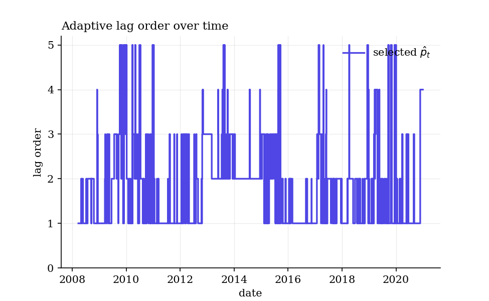
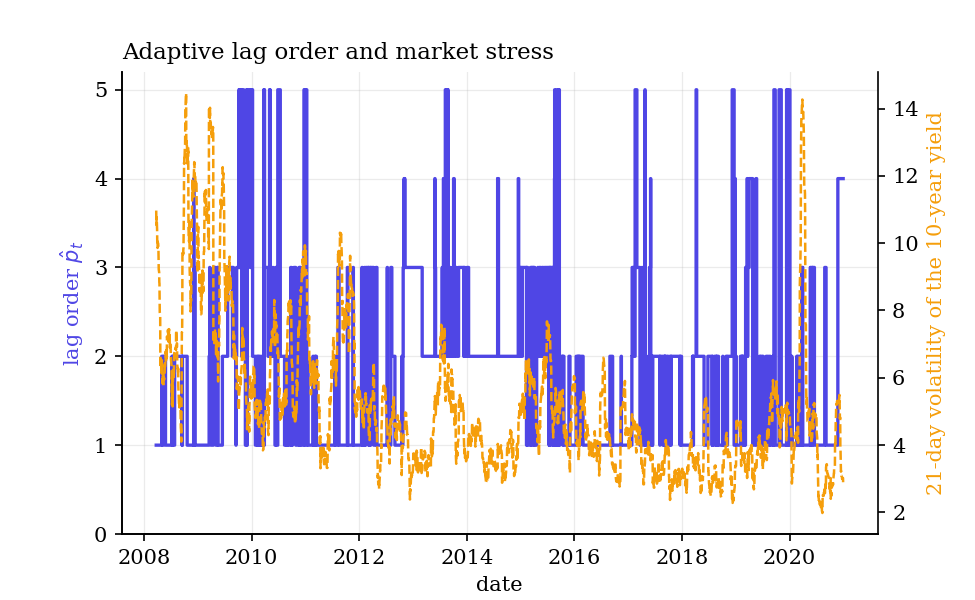
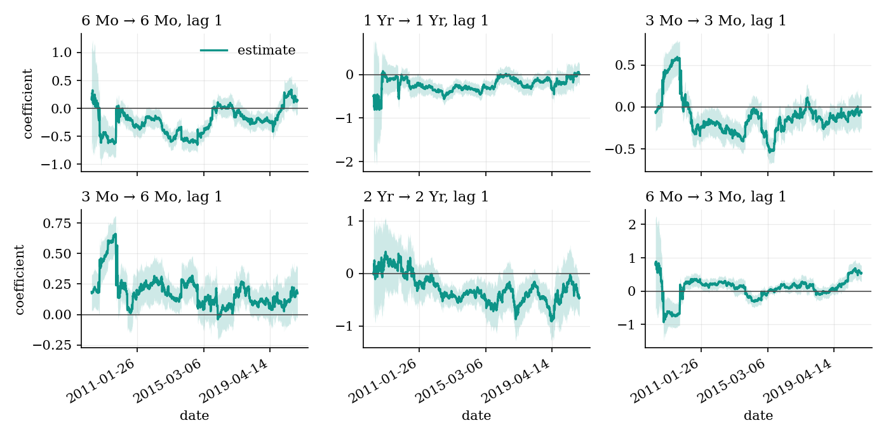
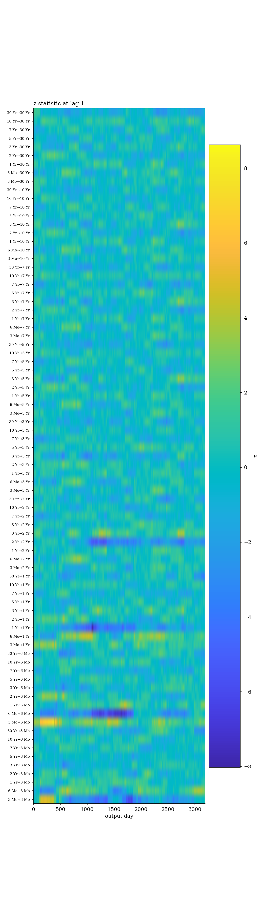
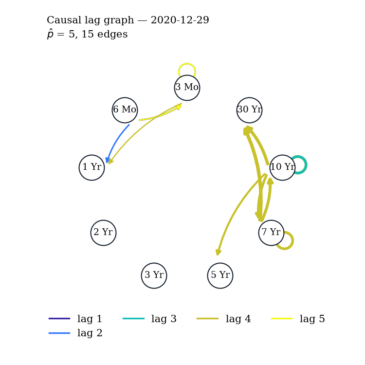
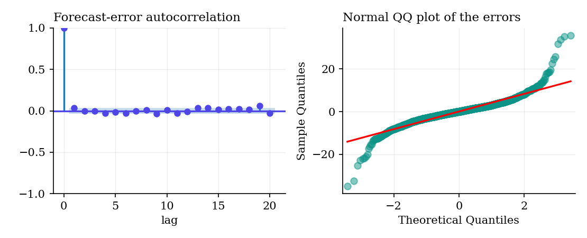

Which series causes which, at what lag, and when — with a coefficient, a standard error, a confidence interval and a false-discovery-rate guarantee for every edge.
A Python implementation of ORACLE-VARX, from Tan, Zanoria, Chen, Lyu and Cucuringu (2026), Causal Lag Structure Discovery in Confounded Time Series via Orthogonalized Adaptive Estimation, doi:10.48550/arXiv.2610.05618. Reimplemented from the paper's equations.
Classical Granger analysis assumes confounders are linear or absent, fixes the lag order once for the whole sample, and tests every edge separately. ORACLE-VARX fixes all three at once.
A flexible learner predicts the outcomes and the lagged series from the confounders; the lag coefficients are estimated on the residuals, so nonlinear confounding goes without assuming its shape. §3.2, eq. (4)–(8)
In each rolling window, lags are added while they stay significant, and the significance level itself is tuned on validation forecasts — so the lag order moves with the regime. §3.3, eq. (9)–(10)
A Benjamini–Hochberg step over all entry-wise tests in the window selects directed, lag-annotated edges at a target false discovery rate. §3.4, Appendix D.4
Aligned tables with stars, booktabs LaTeX, Markdown, and figures in one Parula-based style. A real public-domain dataset ships with the package, so everything runs offline.
pip install oracle-varx # core
pip install "oracle-varx[boost]" # + LightGBM and XGBoost first stages
pip install "oracle-varx[plotly]" # + interactive 3-D surfaces
pip install "oracle-varx[data]" # + yfinance, for the sector-ETF example
pip install "oracle-varx[all]" # everythingRequires Python ≥ 3.10 with numpy, scipy, pandas, scikit-learn, statsmodels, matplotlib and joblib, all installed automatically. The package name has a hyphen; the import name has an underscore.
Never used Python? The README has a from-zero section: installing Anaconda, opening a terminal, running your first line. Fifteen minutes, no prior knowledge assumed.
With \(n\) endogenous series and \(d\) confounders, the model of eq. (2) is
$$ Y_t = \sum_{k=1}^{p^*} A_k Y_{t-k} + g(W_{t-1},\dots,W_{t-p}) + \varepsilon_t, \qquad \mathbb{E}[\varepsilon_t \mid Y_{t-1},\dots,W_{t-p}] = 0 .$$The lag effects stay linear, so they remain interpretable and testable; the confounder effect \(g\) is left completely unrestricted. The causal lag graph of Definition 1 has an edge \((Y^{(j)} \to Y^{(i)}, k)\) exactly when \(A_k[i,j] \neq 0\).
Stack the lags into \(T_t\) and the confounders into \(C_t\) (eq. 3). The model becomes partially linear, and three steps follow: cross-fitted nuisance estimation, residualisation (eq. 6), and OLS on the residuals (eq. 7),
$$ \hat\Theta = \Big(\textstyle\sum_t \tilde T_t \tilde T_t^{\top}\Big)^{-1} \Big(\textstyle\sum_t \tilde T_t \tilde Y_t^{\top}\Big), \qquad \tilde Y_t = Y_t - \hat g_Y(C_t), \;\; \tilde T_t = T_t - \hat g_T(C_t) .$$The estimator is Neyman orthogonal, so first-stage error enters only at second order — which is what permits machine learning in the first stage without losing valid inference. Standard errors are the classical OLS form on the residualised data (eq. 8), with no HAC correction: under conditional homoskedasticity the martingale central limit theorem leaves no autocovariance terms.
Lag 1 is always kept. For \(p = 2,\dots,p_{\max}\), the null \(H_0: A_p[i,j]=0\) for all \((i,j)\) is tested by applying Benjamini–Hochberg at level \(\alpha\) to the \(n^2\) entry-wise z-tests of the lag-\(p\) block, taken from the \(p_{\max}\) fit; the first insignificant \(p\) stops the search. The level itself is then chosen by rolling validation (eq. 10),
$$ \alpha^{*}_t = \arg\min_{\alpha} \mathrm{RMSE}_v(p_\alpha; t), \qquad \hat p_t = p_{\alpha^{*}_t} .$$Under Assumption 1, for every entry of \(\Theta\),
$$ \frac{\hat\Theta_{ri} - \bar\Theta_{ri}}{\hat s_{ri}} \xrightarrow{\;d\;} N(0,1), $$where \(\bar\Theta\) is the window-averaged target of eq. (11); and if \(T_w = o(T^{2/3})\), the centring may be replaced by \(\Theta(u_0)\), the coefficient at the window's own date. Every confidence interval and p-value this package reports rests on this theorem, and admissible_window checks which of the two readings your window supports.
Causal sufficiency does the work. A zero coefficient equals Granger non-causality only when every common cause of the series is observed in \(W\) (Proposition A.13). With a hidden confounder the coefficients become the best linear lead–lag predictor from the observed series: useful for forecasting, no longer causal, and the FDR guarantee lapses. The package fits regardless; the interpretation is yours.
ACLE is a heuristic. Theorem 1 explains why it tracks the lag order — above the true order the z-statistics stay of order one, while a true lag has an entry whose \(|z|\) grows like \(\sqrt{T_w}\) — but a formal consistency result covering the BH step and the validation-chosen level is left open by the paper.
The visible proof that the implementation is faithful. The full map, with the derivations, is in docs/methods.md.
| Code | Paper | What it computes |
|---|---|---|
_utils.build_stacks | eq. (3) | T_t = [Y_{t-1}…Y_{t-p}], C_t = [W_{t-1}…W_{t-p}] |
_utils.blocked_folds | §3.2 | blocked rolling folds, s_{k+1} = s_k + n_test |
_nuisance.cross_fit | eq. (6) | out-of-sample residualisation, one fit per block |
_core.second_stage | eq. (7)–(8) | Θ̂ and its standard errors, batched over windows |
_core._dml_windows | Alg. 1 line 7 | ĝ_Y(C_t) + Θ̂ᵀ(T_t − ĝ_T(C_t)) |
_core.acle_stage1 | §3.3 Stage 1 | sequential BH tests on the p_max fit |
_core.rolling_validation | eq. (9)–(10) | the validation-chosen level, per day |
_core.bh_edges | §3.4, D.4 | BH over n² p̂ tests, with q-values |
_results.conf_int | Theorem 1 | coef ± z1−α/2 · se |
evaluation.window_target | eq. (11) | the window-averaged truth the estimates target |
_utils.admissible_window | assumption (W) | whether to read Θ(u₀) or only Θ̄ |
datasets.make_oracle_dgp | §5.1, eq. (12) | the known-truth benchmark |
cost_report | D.3 | S = n p_max (p_max+3)/2 fits per block |
oracle_varx(Y, W=None, …)The one-call front door; returns an OracleVARXResults.
| Argument | Type | Default | Meaning |
|---|---|---|---|
Y | DataFrame / array | — | endogenous series (T, n); names and dates kept |
W | DataFrame / array / None | None | confounders (T, d) — eq. (2)'s g |
p_max | int | 5 | maximum lag order; assumption (M) needs p_max ≥ p* |
method | str | "oracle-varx" | a rung of Table 1 |
learner | str / estimator | "extra_trees" | first stage (Table 10 B), or your own estimator |
ols_window | int | 200 | second-stage rolling window T_w — eq. (7) |
block | int | 20 | cross-fitting block n_test and refit interval — §3.2 |
validation_days | int | 20 | trailing validation window v — eq. (9) |
q | float | 0.05 | target false discovery rate — §3.4 |
correction | str | "fdr_bh" | "fdr_by" is an addition, valid under arbitrary dependence |
seed | int / None | 42 | threaded through every learner and worker |
n_jobs | int | 1 | blocks in parallel; never changes a number |
method | Lag selection | Confounders | DML |
|---|---|---|---|
"var" | rolling RMSE | none | – |
"varx" | rolling RMSE | linear | – |
"acle-var" | ACLE | none | – |
"acle-varx" | ACLE | linear | – |
"or-varx" | rolling RMSE | nonlinear | ✓ |
"oracle-varx" | ACLE | nonlinear | ✓ |
Each row adds one capability to the row above, so any result can be attributed to the component that produced it.
OracleVARXResults| Attribute / method | Returns | Meaning |
|---|---|---|
.coef, .se | (B, p_max, n, n) | A_k[i,j]: effect of j at lag k+1 on i |
.z, .pvalues, .qvalues | same shape | inference, and BH-adjusted q-values |
.conf_int(level) | (lower, upper) | from Theorem 1 |
.edges | bool array | the BH selection |
.lag, .alpha | (B,) | selected lag order and Stage-1 level per day |
.graph(window) | CausalLagGraph | one period's discovered graph |
.edge_persistence() | DataFrame | how often each edge survives BH |
.summary() / .to_latex() / .to_markdown() | table | one source, three renderings |
.plot_lag_tracking() | (fig, ax) | the paper's Figure 4 |
.plot_coefficient_paths() | (fig, axes) | the paper's Figure 3 |
.plot_lag_vs_volatility() | (fig, axes) | the paper's Figure 5 |
.plot_edge_heatmap(), .plot_graph(), .plot_surface() | figure | additions |
The package ships daily US Treasury yield-curve changes: nine nominal maturities as the system, the real (TIPS) curve as the observed confounders, 2006-02-10 to 2020-12-31, 3,724 trading days, from the U.S. Treasury — a work of the federal government, so public domain. The question is the paper's own, asked of the curve: which maturities lead which, at what lags, once the common real-rate factors are stripped out nonlinearly?
from oracle_varx import OracleVARX, OracleVARXConfig
from oracle_varx.datasets import load_treasury
Y, W = load_treasury()
print(Y.shape, W.shape) # (3724, 9) (3724, 4)
config = OracleVARXConfig(p_max=5, ols_window=252, block=21,
validation_days=21, lag_offset=5, q=0.05)
print(config.summary())model = OracleVARX(config, method="oracle-varx", learner="extra_trees",
seed=42, n_jobs=4)
res = model.fit(Y, W)
print(res.summary()) # the journal table for the last trading dayprint(res.graph(-1)) # the last day's causal lag graph
print(res.edge_persistence()) # share of windows in which each edge survives
print(res.lag_series().groupby(res.index.year).mean()) # lag order by yearThe same call on the paper's own synthetic benchmark, where the data-generating process has exactly one causal cycle at lag 1 — Z → X → Y → Z, each with a coefficient of 0.60:
from oracle_varx import oracle_varx
from oracle_varx.datasets import make_oracle_dgp
Y, W, truth = make_oracle_dgp(n_obs=600, seed=42)
res = oracle_varx(Y, W, p_max=4, learner="linear", ols_window=120,
block=20, validation_days=15, seed=42)
print(res.summary())================================================================================================
ORACLE-VARX: causal lag discovery (Tan, Zanoria, Chen, Lyu and Cucuringu (2026))
Output day : 583 Series : 3
Rolling window T_w : 120 Confounders : 3
Maximum lag p_max : 4 Selected lag p_hat : 1
First stage : linear Stage-1 alpha* : 0.25
Edge FDR level q : 0.050 Discovered edges : 4
------------------------------------------------------------------------------------------------
lag from to Coef. Std.Err. z P>|z| [95% Conf. Int.]
------------------------------------------------------------------------------------------------
1 X X 0.2333 0.0924 2.524 0.012 0.0522 0.4145 **
1 Y X 0.0281 0.1040 0.271 0.787 -0.1756 0.2319
1 Z X 0.8772 0.1190 7.374 0.000 0.6441 1.1103 ***
1 X Y 0.5646 0.0866 6.516 0.000 0.3948 0.7344 ***
1 Y Y 0.1032 0.0974 1.059 0.290 -0.0878 0.2942
1 Z Y -0.0428 0.1115 -0.384 0.701 -0.2613 0.1757
1 X Z -0.1001 0.0747 -1.341 0.180 -0.2464 0.0462
1 Y Z 0.7219 0.0840 8.598 0.000 0.5574 0.8865 ***
1 Z Z 0.0206 0.0961 0.214 0.831 -0.1678 0.2089
------------------------------------------------------------------------------------------------
Selected lag order (p_hat) 1
Edges at FDR q = 0.05 4 of 9
Strongest edge Z -> X (lag 1, 0.8772)
Residual d.o.f. 108
================================================================================================
Significance: *** p<0.01, ** p<0.05, * p<0.10 (two-sided z-tests, Theorem 1).
Standard errors: classical (eq. 8), conditional homoskedasticity.
Edges: Benjamini-Hochberg over the n^2 * p_hat entry-wise tests (Appendix D.4).
Edges are causal only under causal sufficiency: every common cause observed.
The three starred off-diagonal entries are exactly the true cycle. Averaged over every window of the paper's full benchmark the estimates land on 0.584, 0.608 and 0.605 against a truth of 0.600.






p_max was deep enough. An addition.The full script is examples/treasury_curve.py, and every table and figure on this page comes from it.
from Z, to X, lag 1, coefficient 0.8772 means: a one-unit change in Z today goes with a 0.877-unit change in X tomorrow, holding the other lags and the confounders' nonlinear effects fixed.
Stars mark the individual test. The edges are what survives Benjamini–Hochberg across all n² × p̂ tests in the window — stricter, and the thing that carries the FDR guarantee. Read .edges and .qvalues, not the stars, when you want the graph.
Often the headline result. In the paper's ETF data it sits at 1 in calm markets and spikes to 3–5 during the 2008 crisis and the COVID shock: the lag structure elongates as shocks propagate.
Usually more informative than any single window. An edge found in 80% of windows is structure; one found in 3% is noise that happened to clear the threshold.
From Theorem 1. On a coefficient path, the moment the band stops containing zero is the moment the edge switches on — which is what the paper's three-regime benchmark is built to show.
Says what was actually used, not what was offered: the window, the maximum lag, the lag order selected for this day, the Stage-1 level validation chose, and the FDR level.
Each is flagged in its own docstring as an addition, and none changes a default.
| Addition | Why it is defensible |
|---|---|
Benjamini–Yekutieli correction="fdr_by" | §4 concedes BH's guarantee needs independence or positive dependence, which the entry-wise tests in one window — all sharing one Ĵ⁻¹ — are not shown to satisfy. BY is valid under arbitrary dependence. |
| A confidence interval and q-value per edge | The paper lists a per-coefficient interval as a contribution but prints none. Theorem 1 delivers it directly. |
coef_source="p_hat" | Reports each day's coefficients from the fit at its own selected lag order — what the paper's coefficient-error column and Figure 3 actually show. |
| Assumption-(W) guard | Whether T_w sits below T^{2/3} decides whether an estimate is the coefficient on the day or only the window average. This is where a user silently loses Theorem 1. |
| Assumption diagnostics | The paper states (M), (S), (W), (R) and checks none of them on data. |
| Coefficient-constancy test | The premise is drifting coefficients, yet nothing tests the drift. |
| Lag-rule comparison | ACLE against AIC, BIC and Hannan–Quinn, not only against the paper's own RMSE rule. |
| Leave-one-confounder-out | §7 asks for tests that flag hidden confounding; this is the orthogonalised analogue of an omitted-variable probe. |
| Edge persistence and per-regime scoring | The natural summary of a sequence of graphs, and of a benchmark with three regimes, neither of which the paper reports. |
| Extra figures | Edge heatmaps, a graph drawing, a 3-D surface, FDR/power curves, residual diagnostics. |
This is a reimplementation from the paper's equations; the authors' repository carries no licence, so none of their code is used. The checks:
make_oracle_dgp() regenerates the benchmark data distributed with the paper to max|difference| = 9.6e-16 across all 3,000 rows.statsmodels to 2.8e-17 on the standard errors.Three conventions had to be recovered from the published numbers, and all three are documented in evaluation: the paper's FDR is averaged per window while its power and F1 are pooled; its coefficient error is measured against the truth on the output day while its edges are judged against the window average; and its ACLE coefficient error is read off the selected-lag fit. Also: the paper's own tree-learner rows are not bit-reproducible, since its learners carry no random state.